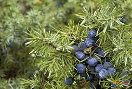

Genèvrier sabine et Genèvrier thurifère Juniperus sabine et thurigère

Genèvrier sabine et Genèvrier thurifère Juniperus sabine et Thurigère (Juniperus sabina et Juniperus thurifera de la famille des Cupressacées)
Attention : hautement toxique par ingestion pour le Korat !
Partie toxique pour les chats en général et le Korat en particulier :
Toutes.
Symptômes du processus pathologique :
Les rameaux de genévrier sabine provoquent de violentes irritations de toutes les muqueuses. Lors d'empoisonnements, on observe une atteinte du système nerveux avec convulsions dont la responsabilité est attribuée au sabinol. Le pyrogallol bloque complètement le circuit intestinal, les Korats qui en ont consommé meurent rapidement.
Origine de la toxicité (principe actif) :
Thuyone, alcool terpénique (sabinol) et l'acide gallique qui se transforme en pyrogallol.